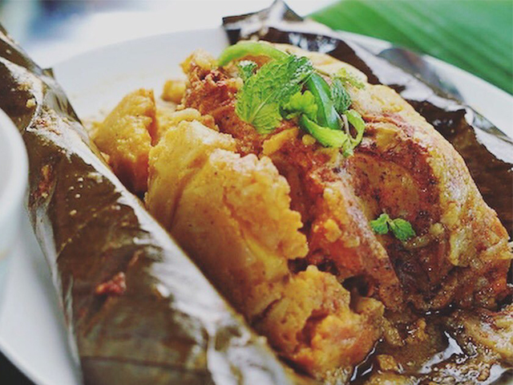

Nacathamal
13/02/2019 
El nacatamal es un Tamal típico de Nicaragua. Consiste en una masa a base de maíz, carne, verduras y arroz, entre otros, dividida en porciones que se cuecen envueltas en hojas de plátano o banano. Los nicaragüenses lo consumen los sábados y domingos, y en días festivos, como Navidad. Este plato nicaragüense es tradición en los pueblos: preparados caseros acompañados con café y tortilla por la mañana.

María: Podrias mencionarme la receta para elaborar un nacathamal?

Mario: Te dejo la lista de los ingredientes:
Tres libras de maíz
2 bolsas de cal para nesquizar el maíz
Dos moños de hierbabuena
Dos libras de papa
Tres bolsas de achiote
Tres cebollas grandes
Tres chiltomas grandes
Tres dientes de ajo
Cinco tomates
Dos libras de arroz
Cuatro libras de res o pollo, otros usan cerdo
Una docena de naranjas agrias
Una bolsa de sal
Medio litro de manteca
Hojas de chagüite
Un rollo de mecate fino

Julissa: Bueno! a prepar ese rico nacathamal.
Pero donde puedo encontrar mas información?
Pero donde puedo encontrar mas información?
Mario: Puedes visitar el Periodico Hoy.